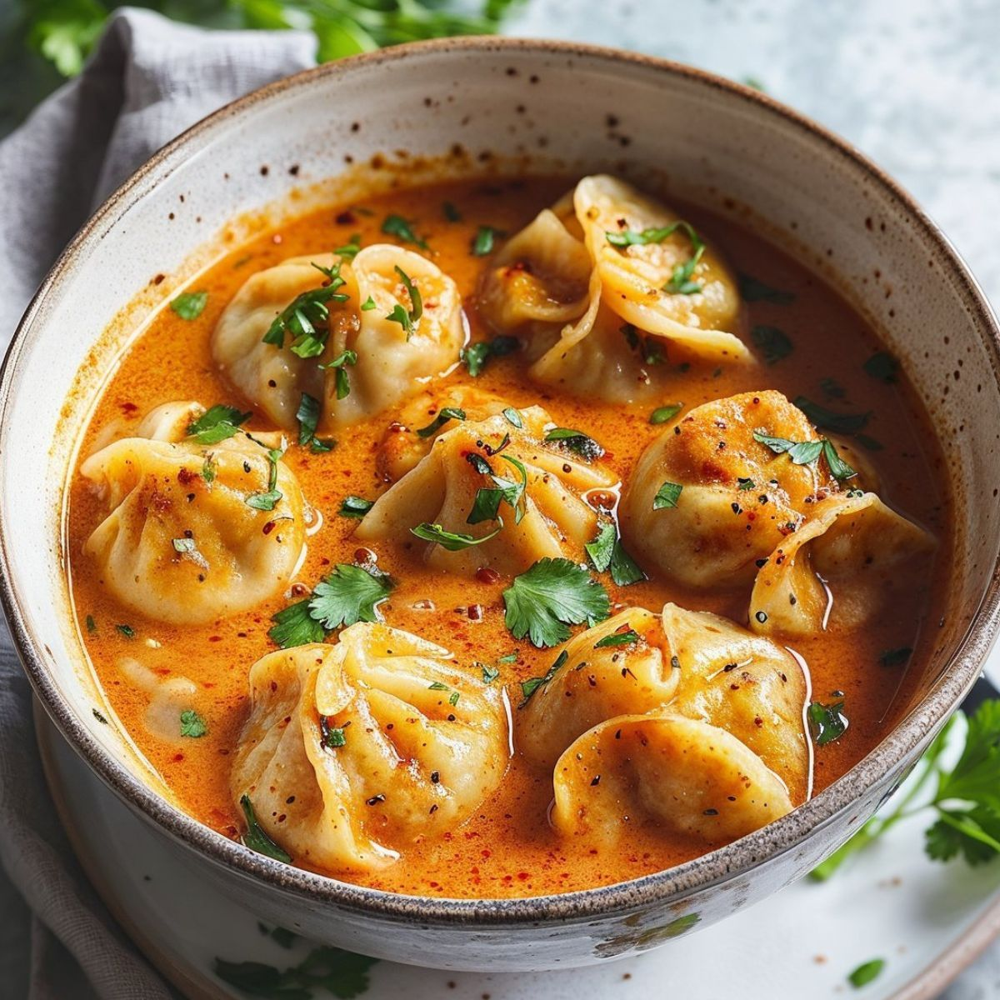
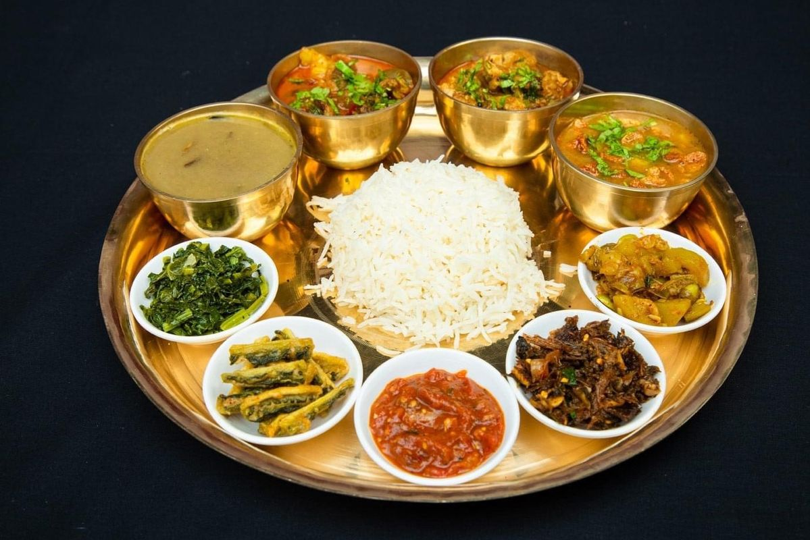
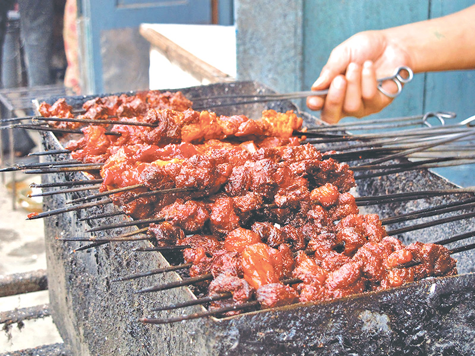

Taste the Himalayas
Nepali cuisine is a rich tapestry woven from Tibetan, Indian, and indigenous hill traditions. From steaming momos served on a Kathmandu street corner to a warming bowl of thukpa in a Sherpa teahouse, every meal tells a story of culture, altitude, and community.
Most dishes are built around rice, lentils, and seasonal vegetables, seasoned with fragrant spices like fenugreek, turmeric, and timur (Sichuan pepper). Meat — usually chicken, goat, or buffalo — is reserved for special occasions and festivals.

Momo
Nepal's beloved dumplings, filled with spiced meat or vegetables and served with a tangy tomato-sesame dipping sauce.
Street Food
Dal Bhat
The national dish — a hearty platter of steamed rice, lentil soup, vegetable curry, and tangy pickles. Refills are always free!
Staple
Thukpa
A warming Tibetan-style noodle soup loaded with vegetables or meat, perfect after a long day on the trail.
Comfort Food
Gundruk
A fermented leafy green side dish, unique to Nepal, often served as a soup or pickle with a distinct tangy flavour.
Traditional
Sekuwa
Juicy Nepali-style skewered barbecue marinated in aromatic herbs and spices, grilled over an open flame.
Grilled
Butter Tea (Po Cha)
A Sherpa and Tibetan staple — strong tea churned with yak butter and salt, warming and energizing at high altitude.
Beverage